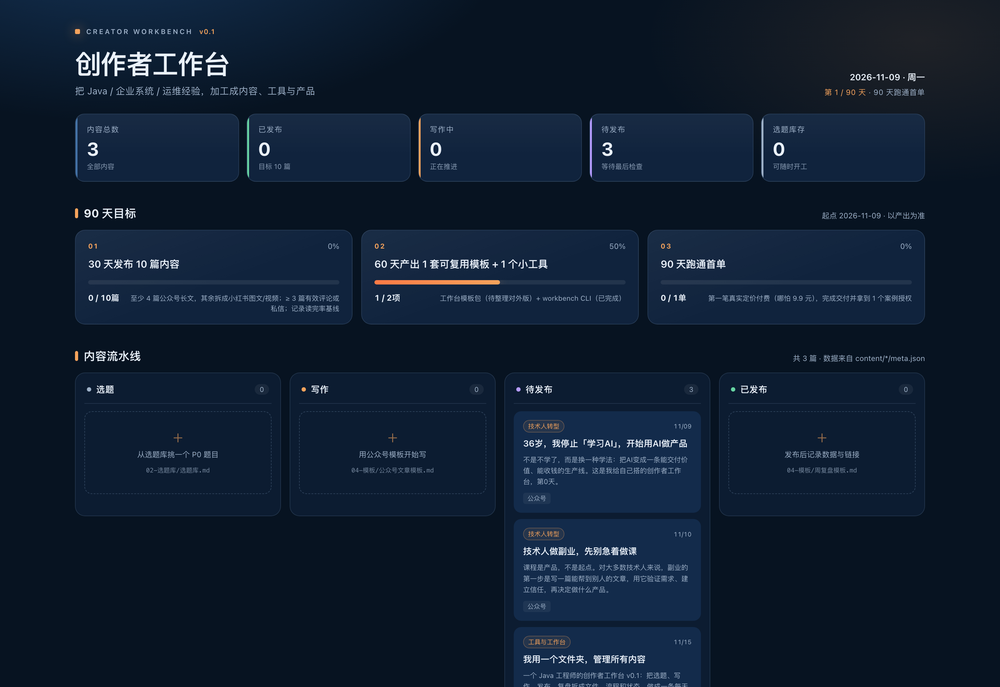

用文件夹 + 零依赖 Python CLI + 本地看板，把「定位 → 选题 → 素材 → 写作 → 发布 → 复盘」变成一条能每天运转的生产线。复制即可用，不需要数据库、不需要注册账号、不需要联网。
选题在备忘录，草稿在桌面，图片在下载目录，发布记录在另一张表。工作台把每篇内容放进一个独立项目文件夹。
选题卡、文章模板、发布检查清单、周复盘模板，把重复动作固定下来，减少每天的临时决策。
内容只有四种状态：选题、写作、待发布、已发布。打开看板，就知道今天该推进哪一篇。

不包含自动发布、多平台一键分发、多人协作、云同步或账号密钥；看板是本地 HTML；只在 macOS + Python 3.14 做过完整自测。v0.1 为内部测试版，暂不公开销售。
下载模板 zip